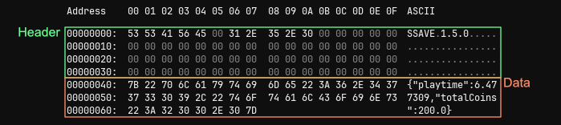

Examples
File Format + External Editing
Saved files are split into two sections: the header and the data.
- The header reserves 64 bytes of the start of the file, and is used to store internal information about the save. Do not edit this section as it will corrupt your save file.
- The data, depending on what
SSAVE_PROTECTIONlevel you set, may be represented in plaintext, encoded or encrypted json.

If you want to edit your save files externally, make sure you're using a file editor that won't interfere with the header information (like Notepad++), otherwise you could get a corrupted file.
Using SSave Without the Manager
While the SSaveManager is a convenient, hands-off way to handle and cache saves, you may find yourself wanting more control.
Assuming you have a SaveFile class like this:
Instead of using ssave_get(), you can directly create an instance of SaveFile and manage it manually:
Using the new operator will create an empty SaveFile instance. Now you can call load() to populate it with data from disk, or save() to write the current state to disk as usual.
You'll likely need to create some kind of persistent object/script to store your saves, else you will incur a performance pentaly by constantly loading your save every time you need it.
Multiple Saves
If you want to have different save files of the same class, you can! When saving and loading files, you are given the option to specify a file prefix. Using this, we can store multiple saves of the same class without overwriting each other. File prefixes can be any number or string.
Using the Manager
If you're using the SSaveManager, the second argument in ssave_get() is the file prefix.
var _saveSlot1 = ssave_get(SaveFile, 1);
var _saveSlot2 = ssave_get(SaveFile, 2);
var _saveFoo = ssave_get(SaveFile, "foo");
When Not Using the Manager
If you're manually creating instaces of your save class, you'd need to use the set_file_prefix() method.
var _saveSlot1 = new SaveFile();
_saveSlot1.set_file_prefix(1);
_saveSlot1.load();
var _saveSlot2 = new SaveFile();
_saveSlot2.set_file_prefix(2);
_saveSlot2.load();
var _saveFoo = new SaveFile();
_saveFoo.set_file_prefix("foo");
_saveFoo.load();
Encoding or Encrypting Saves
If you feel the need to encode or encrypt your saves, you can!
By setting your desired SSAVE_PROTECTION level via set_protection(), the next time you call save() the file will be written with the specified protection. The protection level is cached, so you only need to call it once per change.
When you call load(), SSave will automatically detect the protection level and decode/decrypt the file accordingly; you don't need to call set_protection() again.
// saving
var _save = new SaveFile();
_save.set_protection(SSAVE_PROTECTION.ENCRYPT);
_save.save();
// loading
var _save = new SaveFile();
_save.load();
var _protection = _save.get_protection(); // returns SSAVE_PROTECTION.ENCRYPT
You can edit the SSAVE_PROTECTION_DEFAULT configuration to change the default protection level for all saves which have not yet had their protection set.
Deleting Saved Files
If you want to delete a saved file, you can use the ssave_erase() or erase() functions.